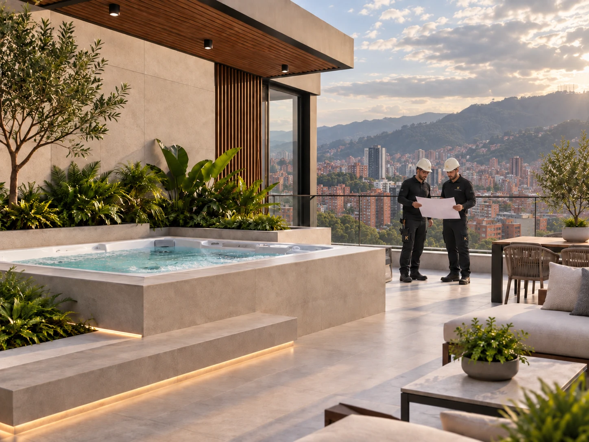
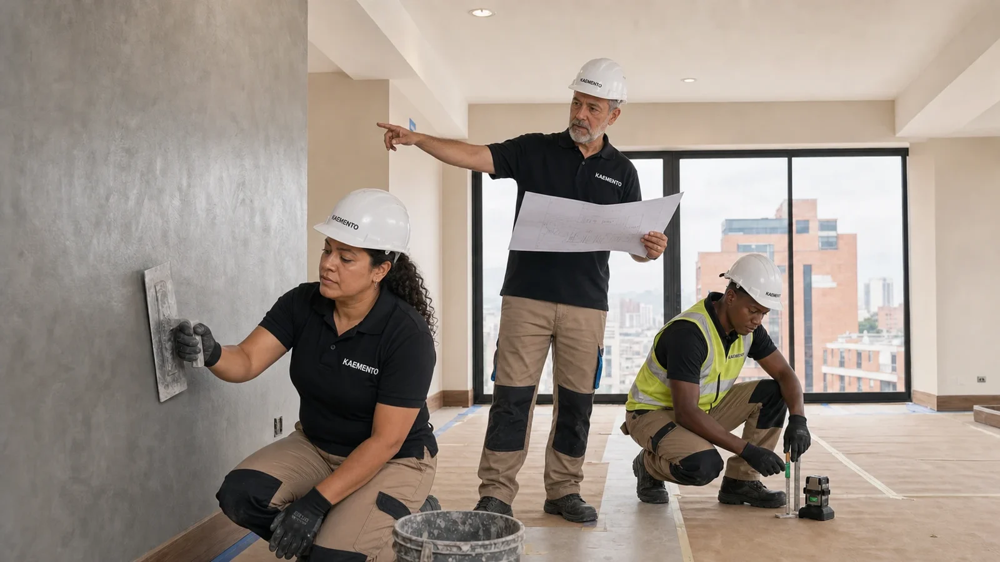
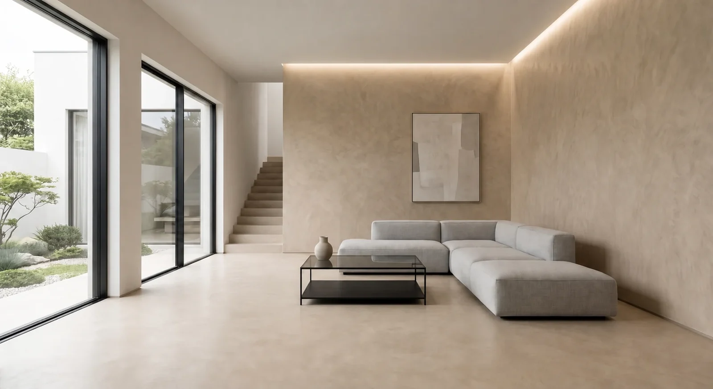

Diagnóstico
Levantamos necesidades, condiciones y restricciones.
ARQUITECTURA · OBRA CIVIL
Integramos diseño, planeación técnica, coordinación y ejecución para transformar una necesidad en una obra bien resuelta.

VISIÓN DEL SERVICIO
Referencias visuales del proceso y de las soluciones KAEMENTO. Cada intervención se define después de evaluar las condiciones reales del espacio.

Definimos alcance, secuencia de trabajo y criterios técnicos antes de intervenir.

Coordinamos equipos y actividades para llevar el proyecto a la realidad.

La entrega integra funcionalidad, acabados y revisión de los detalles.
ALCANCE DEL SERVICIO
Integramos diseño arquitectónico, estudios técnicos, mobiliario, coordinación de especialidades y planeación. Ejecutamos construcción, remodelación, reparaciones locativas y proyectos llave en mano según el alcance definido.
Levantamos necesidades, condiciones y restricciones.
Definimos alcance, sistema, presupuesto y tiempos.
Coordinamos obra, calidad y seguridad.
Verificamos acabados y cierre técnico.
INFORMACIÓN CLAVE
Antes de intervenir, identificamos condiciones, causas y restricciones.
Organizamos frentes de trabajo, controles y entregables.
Atendemos proyectos desde Bogotá en diferentes regiones del país.
La solución final se especifica después de revisar las condiciones reales del proyecto. Los tiempos, materiales y frentes de trabajo se coordinan para proteger la calidad y la operación del espacio.
PREGUNTAS FRECUENTES
Con una revisión de la necesidad, el soporte, el uso del espacio y las restricciones operativas. A partir de allí se define alcance, sistema y programación.
Sí. Según el proyecto podemos integrar diagnóstico, productos, mano de obra, supervisión y entrega técnica.
Sí. KAEMENTO tiene cobertura a nivel nacional y evalúa cada proyecto según ubicación, alcance y condiciones de ejecución.
KAEMENTO EN MOVIMIENTO
Secuencias ilustrativas del proceso. La intervención se define según el diagnóstico y las condiciones de cada superficie.
Visualización del espacio y de los detalles de aplicación en muros y escalones.
Edición visual sin audio · Imágenes generadas con IA, no registro de una obra ejecutada.
ASESORÍA KAEMENTO